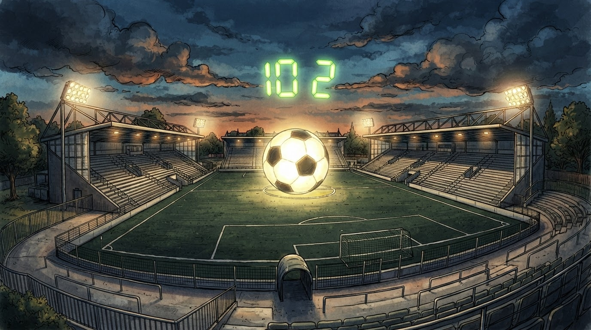

10p
Lider pas 4 xhirosh
Superliga
Gazeta Satirike e Kosovës dhe Shqipërisë — lajme që nuk duhet t'i besoni, por i lexoni gjithsesi
Një gol, tri pikë, dhe një redaksi sportive që tashmë llogarit trofeun — edhe pse sezoni sapo ka nisur.

Departamenti ynë i statistikave sportive — një tabelë Excel dhe një praktikant me kalkulator — ka analizuar rezultatin e derbit dhe ka arritur në përfundimin shkencor se "10 pikë pas pesë xhirosh" mund të interpretohet, me pak fantazi dhe shumë optimizëm, si "gjysma e rrugës drejt titullit".
Trajneri, i kontaktuar në rrugën për në stërvitje, nuk mohoi dot buzëqeshjen kur i thamë se, sipas llogaritjeve tona, ekipi i tij mund të bëhet kampion "brenda 23 xhirove të tjera, nëse fiton të gjitha dhe kundërshtarët harrojnë të luajnë".
"Ne shkojmë hap pas hapi. Sot fituam, nesër shohim. Pasnesër — sipas redaksisë satirike — festojmë." — një tifoz i intervistuar jashtë stadiumit, i cili tha se e kishte lexuar gazetën "1+1=3" në telefon gjatë ndeshjes
Goli i Rrahmanit, i përshkruar nga vetë redaksia sportive si "mrekulli nga afërsia" — që në gjuhën e futbollit të zakonshëm do të thotë thjesht një gol nga pak metra larg — ka nisur tashmë të gjenerojë spekulime për "efektin domino" në renditje. Ballkani, nga ana tjetër, pësoi humbjen e dytë, gjë që ekipi e quan "eksperiencë e nevojshme e maturimit", ndërsa ne e quajmë thjesht "humbje".
Ndërkohë, në një ndeshje paralele të njëjtës xhiro, Feronikeli 74 ka "shokuar" kampionen në fuqi me një fitore të papritur, term që redaksia jonë e interpreton si "kampionia ka humbur, por me fjalë më elegante".
Redaksia jonë tashmë ka porositur kupën e trofeut, "vetëm për siguri", dhe pret vetëm konfirmimin zyrtar — ose xhiron e ardhshme, çfarëdo që të vijë e para.